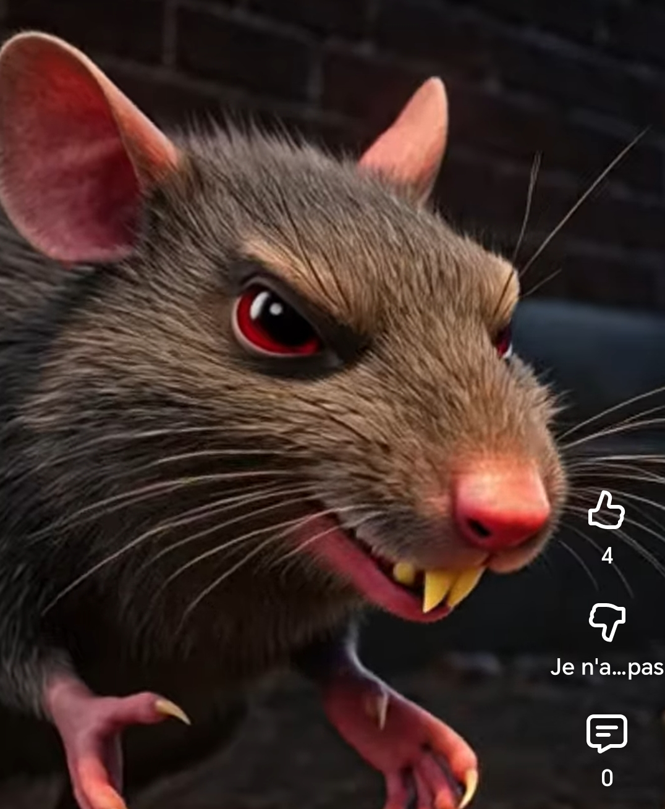

This diabolical rat perfectly represents all the fake "communities" and pseudo-shillers on Twitter/X who harass small token creators. They slide into your DMs with fake promises: "I'll pump your coin to the moon", "shoutout from my 50k followers", "big partnership incoming"… but all they really want is your money in exchange for nothing.
"Should I accept?" — HELL NO. Run before this rat gnaws through your wallet.
Share this meme to warn other creators: don't fall for the fake hype and empty promises. Protect your project. #RatScam #CryptoScammers #TwitterRats